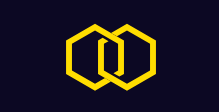
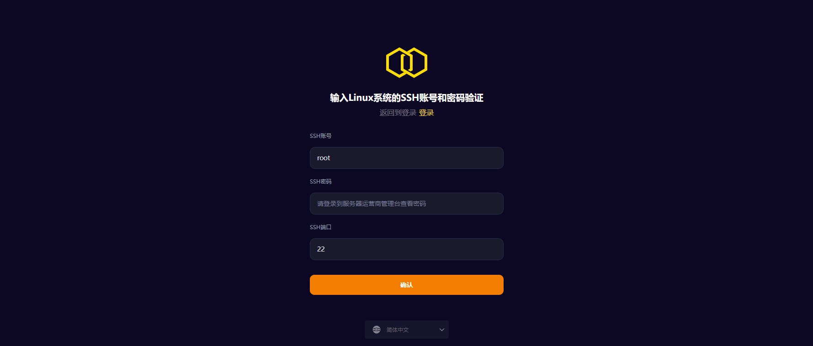
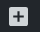
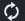
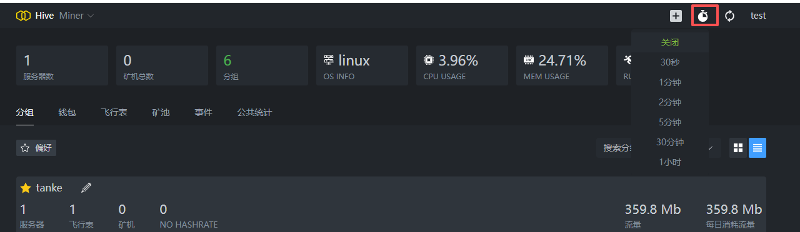
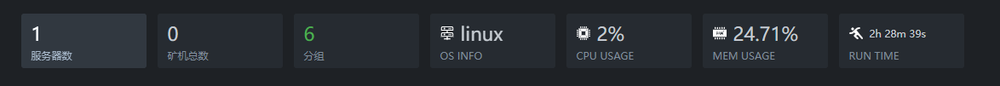
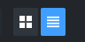
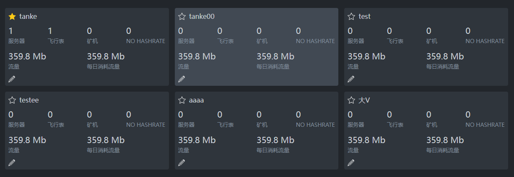

一、手册概述
本手册用于指导用户识别Hiveminer平台PC端登录、首页、钱包、飞行表、矿池、事件、公共统计、账户设置页面的功能元素，并完成各页面的核心操作，帮助用户快速熟悉平台界面及全流程使用逻辑。
二、登录界面

2.1 界面元素说明
-
平台标识：界面顶部的黄色双六边形组合Logo，为Hiveminer平台专属标识

- 教程入口：标题下方的“不知道怎么使用？教程”文字链接，点击可跳转至平台使用指导页面
-
用户名输入区域：
- 标签：“用户名”
- 输入框：提示文字为“Email”，用于输入账号关联的电子邮箱
-
密码输入区域：
- 标签：“密码”
- 输入框：提示文字为“Password”，用于输入账号对应的密码
-
辅助操作控件：
- “记住我”：复选框，勾选后可在当前设备保留登录状态（个人设备建议勾选，公共设备不建议）
- “忘记密码？”：文字链接，用于触发密码找回流程
 - 登录触发按钮：橙色矩形“登录控制台”按钮，点击提交登录信息，登录成功后，页面自动跳转至分组列表页面
- 语言选择器：界面底部的“简体中文”下拉控件，支持切换界面显示语言
2.2 登录操作步骤
-
访问登录界面
在PC端打开浏览器（如Chrome、Edge），在地址栏输入http://www.hiveminerproxy.com:10000/home并按下回车，加载出登录界面（在未登录的情况下）。
- 确认界面元素：核对界面是否包含“2.1 界面元素说明”中的所有模块，确保页面加载完整。
-
填写账号信息
- 点击“用户名”对应的输入框（提示“Email”），输入您的Hiveminer账号关联电子邮箱；
- 点击“密码”对应的输入框（提示“Password”），输入账号密码（注意区分大小写）。
-
可选设置
- （个人设备）勾选“记住我”复选框，后续在该设备访问无需重复输入账号；
- （如需切换语言）点击“简体中文”下拉框，选择目标显示语言（默认已为简体中文）。
- 提交登录请求：确认账号、密码输入无误后，点击橙色的“登录控制台”按钮，完成登录操作。
- 教程查阅：若不熟悉平台操作，点击“不知道怎么使用？教程”链接，查看平台使用指引。
2.3 常见问题及解决方法
-
忘记账号密码
点击界面中的“忘记密码？”链接，按照页面提示完成密码找回流程。
- 输入框无响应：刷新浏览器页面，重新加载登录界面后再次尝试操作。
- 界面语言显示异常：通过底部“简体中文”下拉选择器，重新选择“简体中文”并刷新页面。
2.4 注意事项
- 账号安全：请勿向他人泄露电子邮箱（用户名）及密码；公共设备登录后需及时退出，且不勾选“记住我”。
- 输入提示：用户名输入框提示为“Email”，请确保输入的是账号关联的电子邮箱，避免输入错误。
- 浏览器兼容：建议使用主流浏览器（Chrome/Edge）访问，避免界面显示或操作异常。
三、首页界面
3.1 界面元素说明
（1）顶部导航区
- 平台名称：左上角“Hive Miner”标识
-
右上角功能区：
- 按钮：新增分组功能入口
- 时钟图标：设置定时刷新页面
- 刷新图标：刷新当前页面数据
- “test”标识：当前登录的账号名称
 -
系统概览数据栏：

- 服务数：显示“1”（当前运行的服务数量）
- 矿机数：显示“0”（当前在线的矿机数量）
- 分组：显示“6”（已创建的分组数量）
- OS INFO：显示“linux”（平台运行的系统类型）
- CPU USAGE：显示“3.96%”（当前CPU使用率）
- MEM USAGE：显示“24.35%”（当前内存使用率）
- RUN TIME：显示“2h28m16s”（平台当前运行时长）
（2）功能标签栏
包含6个核心功能标签（当前选中“分组”）：
- 分组：管理矿机/服务分组
- 钱包：查看/管理平台钱包
- 飞行表：矿机运行参数配置
- 矿池：矿池连接与管理
- 事件：查看平台操作/系统事件日志
- 公共统计：平台全局数据统计
（3）分组列表区
-
筛选控件：
- “偏好”标签：当前选中的分组分类
- “搜索分组名称”：下拉+输入框，用于搜索特定分组
-
分组列表项（每一行对应一个分组）：
- 分组名（如“tanke”“tanke00”）
- 铅笔图标：分组编辑入口
- 服务器：对应分组的服务器数量
- 飞行表：对应分组的飞行表配置数量
- 矿机：对应分组的矿机数量
- HASH RATE：对应分组的算力（当前显示“NO HASH RATE”）
- 流量：对应分组的当前流量消耗
- 每日消耗流量：对应分组的日流量消耗
-
右上角切换按钮：
点击切换列表显示样式，默认一个分组对应一行，下图为切换后的样式

3.2 首页常用操作步骤
-
查看系统概览
直接查看顶部“系统概览数据栏”，快速了解平台当前运行状态。
- 切换功能模块：点击“功能标签栏”中的“钱包”“矿池”等标签，进入对应功能页面。
-
搜索目标分组
在“搜索分组名称”输入框中输入分组名，筛选出指定分组。
-
编辑分组信息
点击目标分组对应的铅笔图标，进入分组编辑界面调整配置。注意：分组名不允许重复。
-
“偏好”设置/取消
“偏好”即“收藏”，高亮时表示已加入收藏，已收藏的分组会置顶显示在列表最上面
3.3 分组详情页面
本小节对应从首页分组列表点击目标条目进入的分组详情页面，包含 “服务器列表”“钱包”“飞行表”“矿池”“设定” 5 个标签页，用于管理该分组的专属配置。点击下图行进入分组详情页面

图1（分组列表页面）
3.3.1 服务器列表页面
3.3.1.1 界面元素说明
- 顶部概览数据栏：显示当前服务器的核心状态（服务器数、矿机数、HASH RATE 算力、总消耗流量、正在使用的飞行表数）
- 标签栏：当前选中 “服务器列表” 标签，支持切换至 “钱包”“飞行表” 等标签
-
筛选控件：包含 “全部”“在线”“离线”“偏好” 复选框，用于筛选服务器的显示范围。点击图标，支持自定义按“服务器名称”/“IP地址”进行模糊搜索；点击，支持自定义排序。
-
服务器信息卡片：
- 服务器IP地址：如 “47.239.116.216”（点击IP进入服务器详情页面）
- Wi-Fi 标识：表示服务器网络状态
- 运行时长：如 “7 天 33 分 49 秒”
- 系统：如 “linux”、“windows”代表服务器内核系统类型
- 飞行表状态：显示当前服务器载入的飞行表名称
-
服务器信息卡片全部信息展示：
点击非IP区域展开显示服务器全部信息。
- 配置区域：展示该服务器支持的币种（如 BTC、LTC、BEL 等）
- 详情信息：安装日期、运行时长、IP 地址、内核版本号等
-
快速切换分组：进入分组详情页面后，可将鼠标移入至顶部分组名处快速切换至其他分组
3.3.2 钱包标签页
3.3.2.1 界面元素说明
- 标签栏：当前选中 “钱包” 标签
- 局部钱包提示：“局部钱包只能使用到当前分组”，明确该钱包的适用范围
- 币种筛选标签：包含 “ALEO_JINGLE”“FRACTALBTC”“BEL”，用于筛选对应币种的钱包
- 钱包表格：含 “币种”“名字”“账号”“操作” 列，操作按钮为编辑、删除
- “添加钱包” 按钮：位于页面右上角，用于新增该服务器的局部钱包
3.3.2.2 操作步骤
- 点击 “添加钱包” 按钮，填写币种、名字、账号等信息后提交，新增局部钱包
- 点击币种标签筛选目标钱包，通过操作列按钮编辑 / 删除钱包
3.3.3 飞行表标签页
3.3.3.1 界面元素说明
- 标签栏：当前选中 “飞行表” 标签
- 局部飞行表提示：“局部飞行表仅在当前组的服务器可用”
- 飞行表配置项：包含名称（如 “213”）、子配置（如 “123”）及矿池参数（端口、协议等）
- 操作按钮：收藏、添加子项、编辑、复制、删除
- “添加飞行表” 按钮：位于页面右上角，用于新增该服务器的局部飞行表
3.3.3.2 操作步骤
- 点击 “添加飞行表” 按钮，填写配置信息后提交新增
- 通过操作按钮管理飞行表（收藏、添加子项、编辑、复制、删除）
3.3.4 矿池标签页
3.3.4.1 界面元素说明
- 标签栏：当前选中 “矿池” 标签
- 局部矿池提示：“局部矿池仅在当前分组的代理服务器中使用，可以针对特定分组进行矿池配置管理”
- 币种筛选标签：包含 “ALEO_JINGLE”“BEL”
- 矿池表格：含 “币种”“名字”“地址”“操作” 列，操作按钮为编辑、删除
- “添加矿池” 按钮：位于页面右上角，用于新增该服务器的局部矿池
3.3.4.2 操作步骤
- 点击 “添加矿池” 按钮，填写币种、名字、地址等信息后提交
- 点击币种标签筛选目标矿池，通过操作列按钮编辑 / 删除矿池
3.3.5 设定标签页
3.3.5.1 界面元素说明
- 标签栏：当前选中 “设定” 标签
- 名称配置：“名称” 输入框（如显示 “tanke”）+“确认” 按钮，用于修改服务器名称
-
下拉选择项：
- “算力显示默认币种”：下拉框（如选中 “BEL”），设置算力展示的默认币种
- “消耗流量默认服务器”：下拉框（如选中 “47.239.116.216”），设置流量统计的默认服务器
-
移除分组区域：
- 红色 “移除分组” 按钮
- 风险提示：说明移除分组会删除关联配置，且不可恢复
3.3.5.2 操作步骤
- 修改名称：在 “名称” 输入框填写新名称，点击 “确认” 按钮保存
- 切换默认项：通过下拉框选择 “算力显示默认币种”“消耗流量默认服务器”，选择后自动生效
- 移除分组（谨慎操作）：点击 “移除分组” 按钮，确认提示后删除该服务器分组及关联配置
3.3.6 注意事项
- 分组详情页的钱包、飞行表、矿池均为 “局部配置”，仅适用于当前分组，与全局配置相互独立
- 移除分组操作会删除关联的服务器、飞行表、钱包等配置，且操作不可恢复，需确认后执行
- 局部配置的修改仅影响当前服务器，不会改变平台的全局配置状态
3.4 服务器详情页面（未完）

进入路径：首页 → 分组列表 → 点击目标分组的服务器条目的IP地址，即可进入本页面。包含“代理”“飞行表”“矿工”“矿机”“统计”“设定”6个标签页，均为当前服务器的局部配置（仅适用于本分组），以下按标签页依次说明 。
3.4.1 代理标签页
3.4.1.1 界面元素说明
（文档未完待补充）
3.4.1.2 操作步骤
（文档未完待补充）
3.4.2 飞行表标签页
3.4.2.1 界面元素说明
（文档未完待补充）
3.4.2.2 操作步骤
（文档未完待补充）
3.4.3 矿工标签页
3.4.3.1 界面元素说明
（文档未完待补充）
3.4.3.2 操作步骤
（文档未完待补充）
3.4.4 矿机标签页
3.4.4.1 界面元素说明
（文档未完待补充）
3.4.4.2 操作步骤
（文档未完待补充）
3.4.5 统计标签页
3.4.5.1 界面元素说明
（文档未完待补充）
3.4.5.2 操作步骤
（文档未完待补充）
3.4.6 设定标签页
3.4.6.1 界面元素说明
（文档未完待补充）
3.4.6.2 操作步骤
（文档未完待补充）
3.4.7 注意事项
（文档未完待补充）
四、钱包界面
4.1 界面元素说明

-
顶部导航区
与首页保持一致，包含：
- Hive Miner标识（平台名称）
- 右上角“+”按钮（钱包新增功能入口）
- 时钟图标（全局一致）
- 刷新图标（全局一致）
- “test”标识（全局一致）
-
功能标签栏
当前选中“钱包”标签，同时包含“分组”“飞行表”“矿池”“事件”“公共统计”等功能标签，点击标签可切换至对应功能页面。
-
用户钱包核心区
- 区域标题：“用户钱包”，明确当前页面的管理对象
- “添加钱包”按钮：位于区域右上角，用于发起新增钱包的操作
- 全局钱包说明框：提示“全局钱包可以在你所有的代理服务器中同时使用并且也可以使用到全局飞行表中和代理飞行表”，说明全局钱包的适用范围
-
币种筛选标签组
标签组根据用户钱包列表数据，按币种类型分组提取显示。截图中包含“ALEO_JINGLE”“BEL”“ALEO_ICERIVER”三个币种标签，点击对应标签可筛选显示该币种的钱包信息，再次点击可取消筛选。

-
钱包信息表格
- 列标题：包含“币种”“名字”“账号”“操作”4列
- 内容行：展示各币种对应的钱包详情（如ALEO_JINGLE对应的名字为“hxucucucy”、账号为“fyfoycucucucucyci2”）
- 操作控件：每一行对应“铅笔图标（编辑）”“垃圾桶图标（删除）”两个操作按钮
4.2 钱包常用操作步骤
-
添加新钱包
- 点击用户钱包核心区右上角的“添加钱包”按钮，打开钱包新增表单；
- 按表单提示填写币种、名字、账号等信息（具体字段以实际表单为准）；
- 确认信息无误后提交表单，完成钱包添加。
-
筛选查看特定币种钱包
点击币种筛选标签组中的目标币种（如“BEL”），表格将仅显示该币种对应的钱包信息。
-
编辑钱包信息
- 在钱包信息表格中找到目标钱包行；
- 点击该行“操作”列的“铅笔图标”，打开编辑表单；
- 修改所需内容后提交表单，完成信息更新。
-
删除钱包信息
- 在钱包信息表格中找到目标钱包行；
- 点击该行“操作”列的“垃圾桶图标”；
- 在弹出的确认提示框中确认操作，完成钱包删除。
4.3 注意事项
- 全局钱包的通用性：添加的钱包为全局钱包，可在所有代理服务器、全局飞行表及代理飞行表中共用；
- 删除操作风险：删除钱包前请确认该钱包已停止使用，删除后对应信息无法恢复；
- 标签筛选功能：多币种钱包管理时，建议通过币种标签快速筛选，提升操作效率。
五、飞行表界面（未完）
5.1 界面元素说明
-
顶部导航区
与前序页面一致，包含Hive Miner标识、右上角“+”按钮、时钟图标、刷新图标、当前登录账号“test”标识。
-
功能标签栏
当前选中“飞行表”标签，同时包含“分组”“钱包”“矿池”“事件”“公共统计”等功能标签，点击可切换至对应页面。
-
全局飞行表说明
页面顶部提示“全局飞行表在你的所有服务器都可用”，明确飞行表的跨服务器通用性。
-
“添加飞行表”按钮
位于页面右上角，用于发起新增飞行表分组的操作。
-
飞行表分组模块（每个分组为独立区块）
以“global_fly_teste”分组为例：
- 分组名称：显示为“global_fly_teste”
- 分组操作按钮（名称右侧）：星星图标（收藏）、“➕”图标（添加子项）、铅笔图标（编辑）、复制图标（复制配置）、垃圾桶图标（删除）
- 分组子项区域：展示该分组下的具体飞行表配置（如“tanke”“tanke - copy”子项）
-
飞行表子项信息
每个飞行表可以添加多个配置，信息包含：
- 转发端口名称（如“tanke”）
- 币种标识（如“BTC”“LTC”）及相关参数
- 矿池配置：PoolUrls、端口、协议、FAST状态、矿池模式等
- 子项操作按钮（右侧）：编辑、复制、删除
5.2 飞行表常用操作步骤
- 添加新飞行表分组：点击页面右上角“添加飞行表”按钮，填写分组信息后提交。
- 为分组添加子项：点击分组右侧“+”图标，填写子项的币种、矿池参数等信息后提交。
- 编辑配置：点击分组/子项右侧的铅笔图标，修改信息后保存。
- 复制配置：点击分组/子项右侧的复制图标，生成相同配置的新分组/子项。
- 删除配置：点击分组/子项右侧的垃圾桶图标，确认提示后删除。
5.3 注意事项
- 飞行表为全局配置，修改后同步应用到所有服务器；
- 复制配置后需检查参数，避免冲突；
- 删除前需确认配置已停止使用，删除后无法恢复。
六、矿池界面
6.1 界面元素说明
- 顶部导航区：与前序页面一致。
- 功能标签栏：当前选中“矿池”标签，支持切换至其他功能页面。
-
用户矿池核心区：
- 区域标题：“用户矿池”
- “添加矿池”按钮：位于右上角，用于新增矿池
- 全局矿池说明：提示矿池可跨服务器、飞行表使用
- 币种筛选标签组：标签组根据当前用户矿池数据的币种类型分组提取并显示，包含“ALEO_JINGLE”“BTC”“ETC”“ERG”，点击可筛选对应币种矿池，再次点击可取消筛选。
- 矿池信息表格：含“币种”“名字”“地址”“操作”列，操作按钮为编辑、删除。
6.2 矿池常用操作步骤
-
添加新矿池：点击“添加矿池”按钮，填写币种、名字、地址后提交。
- 筛选币种矿池：点击目标币种标签，表格仅显示该币种矿池。
- 编辑矿池：点击目标行铅笔图标，修改信息后保存。
- 删除矿池：点击目标行垃圾桶图标，确认提示后删除。
6.3 注意事项
- 矿池为全局配置，可跨服务器/飞行表使用；
- 矿池地址需填写准确，否则矿机无法连接；
- 删除前需确认无矿机使用该配置。
- 矿池名称不允许重复
七、事件界面
7.1 Telegram通知标签页
7.1.1 界面元素说明
- 标签标识：当前选中“Telegram”标签。
- 配置说明：描述Telegram通知的绑定方法（如与“hiveosbot”机器人对话获取验证码）。
- Telegram ID输入框：填写机器人关联的用户ID（当前显示“8009322771”）。
- “关注”按钮：完成Telegram渠道绑定。
- 事件列表：展示操作记录（含事件内容、IP、时间）。
7.1.2 配置步骤
- 打开Telegram，与“hiveosbot”机器人对话获取验证码。
- 在输入框填写Telegram ID。
- 点击“关注”按钮完成绑定。
7.2 邮件通知标签页
7.2.1 界面元素说明
- 标签标识：当前选中“邮件”标签。
- 配置说明：描述SMTP服务的开启及配置方法。
- 邮件配置表单：含“主邮件地址”“秘钥”“主机地址”“端口”“接收列表”项。
- 操作按钮：“保存”（保存配置）、“发送测试”（验证通知）。
7.2.2 配置步骤
- 登录邮箱开启SMTP服务，获取授权秘钥。
- 填写表单中主邮件地址、秘钥、主机地址等信息。
- 点击“保存”，再点击“发送测试”验证可用性。
7.3 Server酱通知标签页
7.3.1 界面元素说明
- 标签标识：当前选中“Server酱”标签。
- 配置说明：介绍Server酱功能及渠道编码规则（如“方糖服务号=9”）。
- Server酱表单：含“SendKey”“Channel(通道号)”输入项。
- 操作按钮：“保存”“发送测试”。
- 注意提示：标注Server酱的推送次数限制。
7.3.2 配置步骤
- 登录Server酱平台获取SendKey。
- 填写SendKey及对应Channel通道号。
- 点击“保存”，再点击“发送测试”验证可用性。
7.4 事件列表操作
事件列表展示平台所有操作记录（如分组创建、服务修改），可直接查看事件内容、操作IP及时间，无需额外操作。
7.5 注意事项
- 各通知渠道的配置信息需准确，否则无法接收通知；
- 配置后务必点击“发送测试”验证；
- Server酱免费版有推送次数限制，可按需开通VIP。
八、公共统计界面
8.1 界面元素说明

-
顶部导航区
与前序页面一致，包含Hive Miner标识、右上角“+”按钮、时钟图标、刷新图标及当前登录账号标识。
-
功能标签栏
当前选中“公共统计”标签，可点击切换至分组、钱包等其他功能页面。
-
数据范围切换控件
页面右上角的下拉框（当前显示“个人数据”），下拉选项包含“全网数据”“个人数据”，用于切换统计数据的覆盖范围。
-
统计模块区域
包含2个核心统计模块：
-
算法/显卡模块：
- 模块标题：“算法/显卡”
- 环形图：可视化展示不同算法的占比分布
- 数据列表：对应环形图的具体算法（如sh256、x11）及占比数值（如sh256占90.91%）
-
内核模块：
- 模块标题：“内核”
- 环形图：可视化展示不同内核的占比分布
- 数据列表：对应环形图的具体内核（如s19proxx、whatminer）及占比数值（如whatminer占95.9%）
-
算法/显卡模块：
8.2 常用操作步骤
-
切换数据范围
点击页面右上角的下拉框（默认显示“个人数据”），选择“全网数据”可查看平台所有用户的统计分布，选择“个人数据”则查看当前账号关联资源的分布情况。
-
查看统计详情
直接查看“算法/显卡”“内核”模块的环形图及下方数据列表，了解对应维度的占比信息。
8.3 注意事项
- 统计数据为实时更新，若数据未显示最新状态，可点击页面右上角的刷新图标重新加载数据。
- “全网数据”反映平台整体资源分布，“个人数据”仅关联当前账号的配置，按需切换视图即可获取对应范围的统计信息。
九、账户设置
包含 “账号”“密码”“验证器”“会话”“活动” 5 个标签页，用于管理账户基础信息、安全配置及操作日志。
9.1 账号标签页
9.1.1 界面元素说明
- 顶部标签栏：包含 “账号”“密码”“验证器”“会话”“活动” 标签，当前选中 “账号”。
-
账户资料设定区域：
- 标签：“语言”
- 下拉框：默认显示 “中文”，支持切换界面语言。
-
档案区域：
- 说明文字：“你的用户名是您在 KaxinID 的身份并用于登录”
- “当前用户名” 输入框：显示当前账号名（示例为 “test”）
- “新的用户名” 输入框：用于填写修改后的账号名
- “确认” 按钮：提交用户名修改请求
9.1.2 操作步骤
- （可选）在 “语言” 下拉框中选择目标界面语言。
- 在 “新的用户名” 输入框中填写想要修改的账号名。
- 点击 “确认” 按钮，完成用户名更新。
9.2 密码标签页
9.2.1 界面元素说明
- 顶部标签栏：当前选中 “密码” 标签。
- 密码说明：“密码更改也会重设您的 API key”，提示密码修改的关联影响。
-
密码输入区域：
- “* 当前密码” 输入框：填写当前账号的有效密码
- “* 新密码” 输入框：填写新密码（提示 “密码必须至少包含 9 个字符”）
- “* 确认新密码” 输入框：再次填写新密码以验证一致性
-
操作按钮：
- “更新密码” 按钮：提交密码修改请求
- 眼睛图标：切换密码输入框的明文 / 密文显示状态
9.2.1 操作步骤
- 在 “当前密码” 输入框填写当前账号密码。
- 在 “新密码” 输入框填写符合长度要求（≥9 字符）的新密码。
- 在 “确认新密码” 输入框重复填写新密码。
- （可选）点击眼睛图标确认密码输入无误。
- 点击 “更新密码” 按钮，完成密码修改（修改后 API key 会自动重置）。
9.3 验证器标签页
9.3.1 界面元素说明
- 顶部标签栏：当前选中 “验证器” 标签。
-
二步验证区域：
- 功能说明：“可以锁定的 hiveminer ID 高级账户安全性”
- 开关控件：显示 “二步验证关闭”，用于开启 / 关闭二步验证功能
-
二级密码输入区域：
- “原密码” 输入框：填写当前账号密码
- “* 新密码” 输入框：填写二步验证的二级密码
- “* 确认新密码” 输入框：重复填写二级密码
-
操作按钮：
- “更新二级密码” 按钮：提交二级密码设置请求
- 眼睛图标：切换密码输入框的明文 / 密文显示状态
9.3.2 操作步骤
- 点击 “二步验证关闭” 开关，启用二步验证功能。
- 在 “原密码” 输入框填写当前账号密码。
- 在 “新密码”“确认新密码” 输入框填写二级密码。
- 点击 “更新二级密码” 按钮，完成二步验证的密码配置。
9.4 会话标签页
9.4.1 界面元素说明
- 顶部标签栏：当前选中 “会话” 标签。
- 认证 TOKEN 说明：“您可以在这里管理您的个人 API Token。您可以为您的第三方应用生成一个新的 Token，或者移除会话令牌”，说明该页面功能。
-
个人 Tokens 列表：展示已生成的 API Key，每个 Key 对应：
- 开关控件：控制 Token 的启用 / 禁用状态
- “显示” 按钮：查看完整的 API Key 内容
- “编辑” 按钮：修改 Token 的关联配置
- “撤销” 按钮：删除该 Token
- “生成新的个人 Token” 按钮：创建新的 API Token 用于第三方应用授权。
9.4.2 操作步骤
- 生成新 Token：点击 “生成新的个人 Token” 按钮，系统自动创建新的 API Key 并加入列表。
-
管理现有 Token：
- 查看：点击目标 Token 的 “显示” 按钮，查看完整 API Key。
- 编辑：点击 “编辑” 按钮，调整 Token 的关联配置。
- 撤销：点击 “撤销” 按钮，删除该 Token（第三方应用将无法通过此 Key 授权）。
9.5 活动标签页
9.5.1 界面元素说明
- 顶部标签栏：当前选中 “活动” 标签。
-
活动日志列表：展示账号的登录操作记录，包含 3 列信息：
- 操作类型：当前均为 “登录”
- IP 地址：登录操作对应的设备 IP
- 时间：登录操作的具体时间（示例：2025-12-24 21:19:05）
9.5.2 操作步骤
直接查看活动日志列表，核对登录 IP、时间是否符合自身操作记录，用于账户安全审计。
9.6 注意事项
- 用户名、密码修改后需重新登录账号生效。
- 密码修改会同步重置 API Key，需及时更新第三方应用的 Token 配置。
- 二步验证启用后，登录需额外验证二级密码，提升账户安全性。
- API Token 用于第三方应用授权，撤销 Token 前需确认对应应用已停止使用。